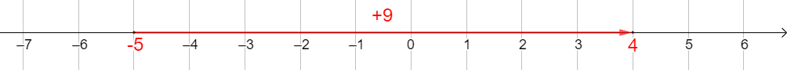
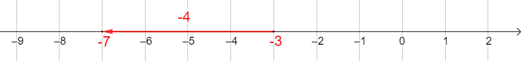

Regning med positive og negative tall
1. Addisjon
Et positivt eller negativt talls avstand fra null er tallverdien uten fortegnet.
Avstanden fra null til \(23{,}4\) er \(23{,}4\). Avstanden fra null til \(-\dfrac{2}{3}\) er \(\dfrac{2}{3}\).
Når vi skal addere to tall, har vi to mulige situasjoner.
| Hvis tallene har samme fortegn | Hvis tallene har ulike fortegn |
|---|---|
|
|
Summen er resultatet av en addisjon, og differansen er resultatet av en subtraksjon.
2. Subtraksjon
Det motsatte tallet til et tall har samme avstand fra null, men motsatt fortegn.
Det motsatte tallet til \(5\) er \(-5\). Det motsatte tallet til \(-8{,}2\) er \(8{,}2\).
Ikke bland sammen det «motsatte tallet» og den «inverse verdien» til et tall. Det er ikke det samme!
Å subtrahere et tall er det samme som å addere det motsatte tallet.
Parentesene vi bruker i starten for å se ting tydelig, bør gradvis fjernes for å gjøre regnestykkene lettere å lese.
Vanligvis skriver vi ikke \((+5)-(+3)\), men heller \(5-3\).
For alle tall \(a\) og \(b\) gjelder:
- \(a+(+b)=a+b\)
- \(a+(-b)=a-b\)
- \(a-(+b)=a-b\)
- \(a-(-b)=a+b\)
Når parentesene er fjernet, kan vi bruke metoden for addisjon.
I starten kan vi bruke tallinjer for å visualisere disse regneoperasjonene bedre.
\(-5+9=4\)

\(-3-4=-7\)

I et regnestykke med flere addisjoner og subtraksjoner gjør jeg først alle subtraksjonene om til addisjoner (eller fjerner parentesene). Deretter utfører jeg regneoperasjonene ved å samle de negative tallene på én side og de positive på den andre.
Når det ikke er parenteser, kan regnestykket ses som en rekke addisjoner, og hvert \(+\) eller \(-\) kan ses som fortegnet til tallet som kommer etter.
Hvis to motsatte tall adderes i et regnestykke, opphever de hverandre. Vi kan derfor stryke dem.
3. Multiplikasjon
Når vi multipliserer to positive eller negative tall, finner vi fortegnet til resultatet ved hjelp av følgende regel.
- Hvis de har samme fortegn, blir resultatet positivt.
- Hvis de har ulike fortegn, blir resultatet negativt.
Avstanden fra null til resultatet er produktet av avstandene fra null til de to tallene.
Å multiplisere med \(-1\) betyr altså å bytte tallet med det motsatte tallet. Med andre ord: For alle tall \(b\) som ikke er null, har vi \(b\times(-1)=-b\).
For å finne fortegnet til et produkt med flere faktorer, ser vi på antallet negative faktorer.
- Hvis antallet er partall, blir resultatet positivt.
- Hvis antallet er oddetall, blir resultatet negativt.
Vi kan også gruppere faktorene på en smart måte for å gjøre utregningene enklere.
4. Divisjon
Den inverse verdien til et tall \(a\) som ikke er null, er tallet \(\dfrac{1}{a}\).
Den inverse verdien til \(2\) er \(\dfrac{1}{2}\). Den inverse verdien til \(-8\) er \(-\dfrac{1}{8}\).
Å dividere med et tall er det samme som å multiplisere med den inverse verdien.
Siden et tall og den inverse verdien har samme fortegn, følger fortegnet til en kvotient av to positive eller negative tall samme regel som fortegnet til et produkt.
5. Regnerekkefølge
Når et regnestykke inneholder flere regneoperasjoner, går vi fram på følgende måte.
- Finn tellerne og nevnerne, og utfør regneoperasjonene i dem.
- Regn ut parentesene, og begynn med de innerste parentesene.
- Utfør divisjonene og multiplikasjonene.
- Fullfør regnestykket.
Hvis vi har \((8-(5-3))\), er \((5-3)\) den innerste parentesen og derfor den som skal regnes ut først.